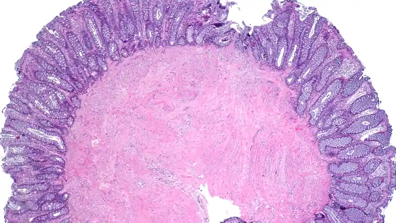
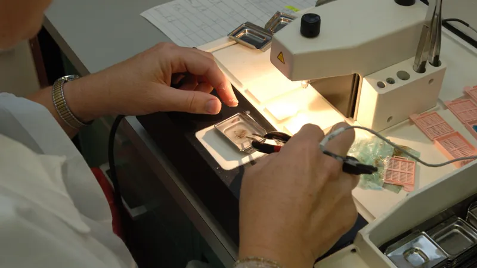

Fujifilm launches Synapse Pathology v3.0 — with a foundation model for GI screening and an AI app hub
Fujifilm Healthcare Americas launched Synapse Pathology v3.0 on Monday — a release with more than 50 new features that pairs an AI-orchestrator distribution hub with the Synapse Pathology AI Foundry, a pathology-specific foundation model Fujifilm calls the world's first built for screening.
Fujifilm Healthcare Americas Corporation announced today the launch of Synapse® Pathology v3.0 from its Lexington, Massachusetts headquarters. The release adds more than 50 new features and functions, but the substance is in two additions: Synapse AI Orchestrator, a distribution hub for third-party AI apps, and the Synapse Pathology AI Foundry, a large-scale pathology foundation model trained on millions of pathology images. The platform will be showcased at Pathology Visions 2026 in San Diego, October 17–20, at booth #603.
“Digital pathology is evolving rapidly, and our customers are looking for solutions that not only help improve the experience of working in a digital environment today, but also prepare them for the AI-driven workflows of tomorrow,” said Dr. Mark Lloyd, vice president of digital pathology at Fujifilm Healthcare Americas.

An app store model for pathology AI
On the workflow side, v3.0 adds Smart Worklist sorting, slide tagging, new measurement tools, new navigation devices, and collaboration upgrades. Fujifilm also enhanced its existing proprietary algorithms, TissueSync® and TissueDirect®. But the structural bet is the Synapse AI Orchestrator, described as a fully automated distribution hub connecting the Synapse Pathology platform with Fujifilm's growing ecosystem of third-party AI partners — so labs can plug specialized algorithms into their digital pathology workflows instead of navigating separate systems and applications.
The launch partner named is Ibex, whose AI-powered solutions for malignancy detection in prostate, breast and gastric specimens will be accessible through the platform. The orchestrator model is the interesting tell: rather than building every algorithm itself, Fujifilm is positioning Synapse Pathology as the plumbing that routes work between scanners, viewers, and whichever vendor's AI a lab buys.

The Foundry: a foundation model, not another detector
The bigger AI news is the Synapse Pathology AI Foundry. Unlike the narrow malignancy detectors that dominate pathology AI — one model, one tissue, one task — foundation models are designed as a broad technological base that downstream applications can build on. Fujifilm says the Foundry model, trained on millions of pathology images, will serve as the foundation for a range of current and future Synapse Pathology AI capabilities. It is for research use only.
At Pathology Visions, Fujifilm will demonstrate what it calls the world's first foundation model for screening in pathology: a model designed to identify and distinguish normal, inflammatory, atypical and malignant conditions in gastrointestinal specimens. The company will also present a scientific poster on Friday, October 16 at 5:00 p.m. (display #9): “From Diagnostic to Prognostic Risk Scores in GI Cancers: Using AI in H&E WSIs for Clinical Insights” — moving the model from classification toward prognostic risk scoring in GI cancers.
Why it matters
Pathology is one of the clearest cases for AI assistance in medicine: whole-slide images are gigapixel files, pathologist workloads keep rising, and the narrow-detector era forced labs to license a separate algorithm for every organ and indication. A credible pathology foundation model — plus an orchestrator that pipes third-party algorithms through the same workflow — is Fujifilm's bid to collapse that sprawl into one platform. The question it has to answer, like every foundation model in medicine, is generalization: millions of training images mean little until independent labs validate the model across scanners, stains, and patient populations. Pathology Visions, October 17–20, is where that argument begins.
Fujifilm will also host expert sessions at its booth on hierarchical vision AI for whole-slide analysis, agentic AI for digital pathology, and data acquisition for pathology LLMs — a small signal of where the field is heading: not single-purpose detectors, but composable AI infrastructure. BioSpace's coverage carries the full announcement.